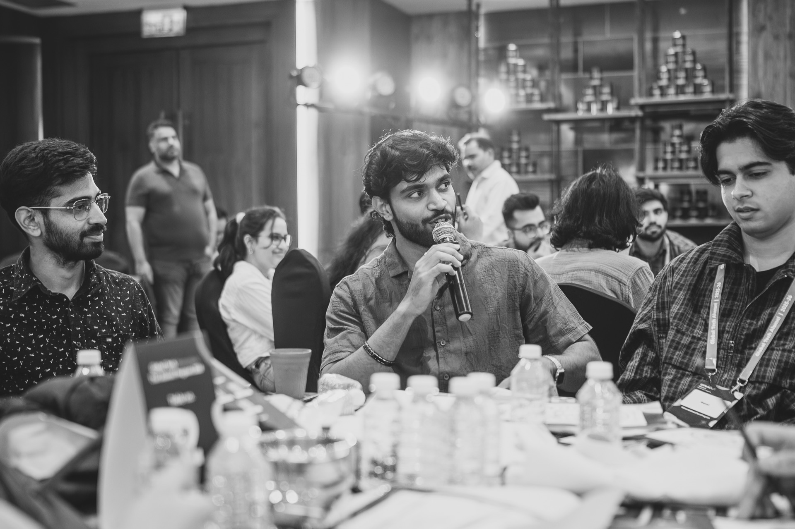

Software Engineer - Oracle
Chirag Vats
I build product systems where full-stack engineering, cloud-ready architecture, and AI-assisted workflows meet real delivery pressure.
Current: Oracle
Full-stack delivery
AI workflow exploration
Release reliability
Proof of execution
Delivery with product ownership behind it.
Current work
Oracle engineer working across the stack.
Focused on concise, durable improvements that make product behavior clearer, delivery smoother, and customer-facing workflows more reliable.
Shipping production-grade improvements across frontend, backend services, automation, validation, and operational support.
Taking ownership from requirement understanding through design alignment, implementation, review, validation, and release readiness.
Improving reliability through clearer UI behavior, resilient API handling, automation stabilization, review discipline, and patch support.
Exploring AI-assisted workflows and internal productivity POCs that reduce repetitive effort and improve knowledge discovery for engineers.

Collaboration signal
Comfortable in the middle of ambiguity.
My strongest work happens when requirements are moving, services are connected, and teams need clear communication. I write RCAs, review MRs, support release validation, mentor new contributors, and keep execution grounded in product behavior.
People-first engineering
Building trust before building systems.
I care about the conversations around the code: aligning quickly, listening for edge cases, and turning loose requirements into shipped work that teams can understand and maintain.
Selected builds
Projects that connect usability with engineering depth.
2024
React
Face Recognition System
Password-free authentication experience with faceapi.js models, React, Node, Express, Firebase, and TOTP-based MFA.
React
Node
Firebase
MFA
2024
Flask
Chat With Multiple PDFs
Conversational PDF app using Flask, PyPDF2, FAISS, LangChain, Google Generative AI embeddings, and supplementary web search.
Flask
FAISS
LangChain
GenAI
2023
IoT
Garbage Segregation System
IoT-based segregation and monitoring system with Arduino, sensors, Python analytics, and Firebase-backed real-time data.
IoT
Arduino
Python
Firebase
Technical range
Practical tools, used across real product surfaces.
Product Engineering
React
JavaScript
Node.js
Express
Flask
Java
Data and Cloud
Oracle SQL
SQLite
Firebase
AWS architecture
Cloud storage
AI and Automation
MCP workflows
LangChain
FAISS
Google GenAI
Playwright
Cypress
Reliability
Release validation
MR reviews
RCA writing
API recovery
Scheduler tuning
Trajectory
From strong fundamentals to ownership-heavy delivery.
Jul 2025 - Present
Software Engineer
OracleWorking on Oracle product delivery with ownership across full-stack engineering, release support, automation, reliability improvements, and AI-assisted developer workflows.
Jan 2025 - Jul 2025
Software Engineer Intern
OracleContributed to enterprise product engineering through full-stack development, testing, automation support, debugging, and release validation in a collaborative engineering environment.
Aug 2023 - Dec 2023
Software Engineer Intern
Jacobs, Digital Factory DepartmentBuilt a full-stack participant analysis platform with React, Bootstrap, Node.js, SQLite, Teams meeting data extraction, and Highcharts dashboards.
2021 - 2025
B.Tech, Information Technology
Vellore Institute of TechnologyBuilt a strong foundation in web systems, cloud architecture, databases, AI-assisted applications, and product-focused engineering.